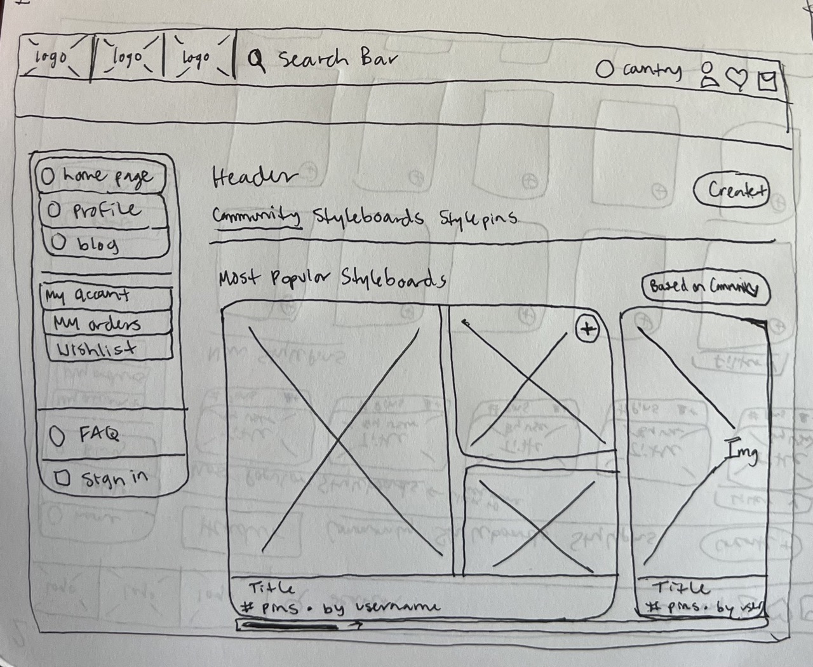
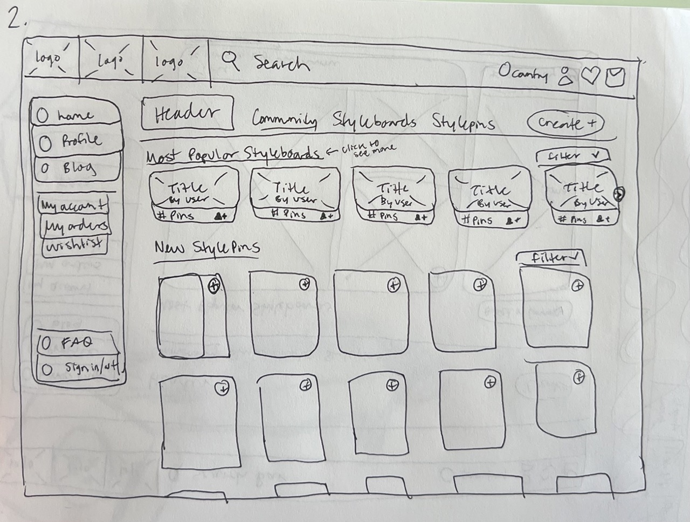

-
Using the favorite website you chose in homework 1, create a wireframe for one page of it using pen/paper, PowerPoint, or any your tool of choice. (use the 'img' tag!) Make sure to let us know what the name of your website is (Use the 'p' tag!)
Website used: Angels Avenue

-
Try to improve the website you've chosen, and create a redesigned wireframe of one page for the same website using the principles of visual hierarchy that you learned from the article.

-
What is the goal of the website? Who is it intended for? How does the design accomplish this? Write 2-3 sentences answering these questions. (Use the 'p' tag again!)
The goal of the website is to create a community similar to pinterest except specifically for the brand Djerf Avenue. It's intended for those who follow Matilda Djerf and her style as well as her brand, especially to drive purchases. The design incorporates elements of a traditional retail site (ie. their Djerf Avenue site and purchase history) with aspects of a social site (through use of profile and pins to save etc.)
-
Write 2-3 sentences about what problems your redesign addressed, and how it solved them.
The problem I wanted to address was I feel like the social aspect is lost and kind of confusing to navigate in comparison to the purchasing aspect. I feel like the style pins are the most understandable and interesting and with the original design you can't really see them unless you scroll further. I also feel like there was confusion between the add sign for following a board/user versus the add sign for just adding one singular pin. I also feel like linking the most popular styleboards back to the other style boards tab as well as linking the new stylepins text back to the other tab will help users see the connection and navigate the site better.
NOTE: Make sure to include the wireframe images in the website and don't just put it in your assets folder!
Your wireframes should look something like this: